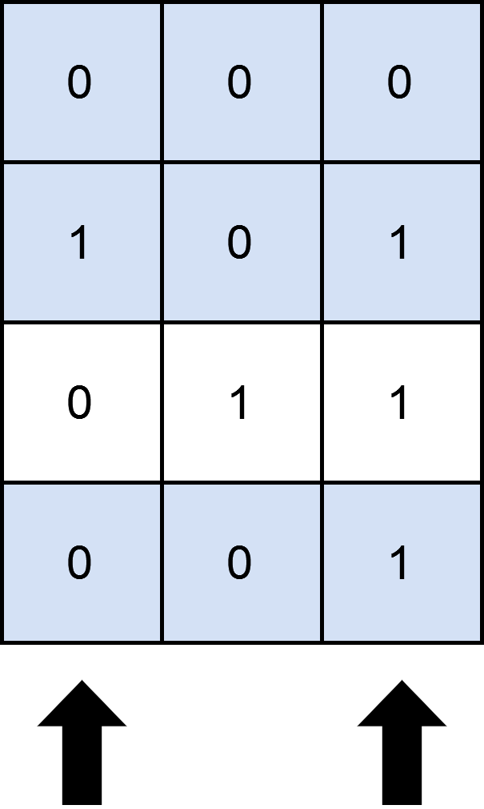
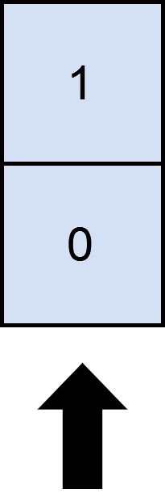

| Category | Difficulty | Likes | Dislikes |
|---|---|---|---|
| Algorithms | Medium | 291 | 436 |
array | backtracking | bit-manipulation | matrix | enumeration
apple
You are given an m x n binary matrix matrix and an integer numSelect.
Your goal is to select exactly numSelect distinct columns from matrix such that you cover as many rows as possible.
A row is considered covered if all the 1's in that row are also part of a column that you have selected. If a row does not have any 1s, it is also considered covered.
More formally, let us consider selected = {c1, c2, ...., cnumSelect} as the set of columns selected by you. A row i is covered by selected if:
matrix[i][j] == 1, the column j is in selected.i has a value of 1.Return the maximum number of rows that can be covered by a set of numSelect columns.
Example 1:

Input: matrix = [[0,0,0],[1,0,1],[0,1,1],[0,0,1]], numSelect = 2
Output: 3
Explanation:
One possible way to cover 3 rows is shown in the diagram above.
We choose s = {0, 2}.
- Row 0 is covered because it has no occurrences of 1.
- Row 1 is covered because the columns with value 1, i.e. 0 and 2 are present in s.
- Row 2 is not covered because matrix[2][1] == 1 but 1 is not present in s.
- Row 3 is covered because matrix[2][2] == 1 and 2 is present in s.
Thus, we can cover three rows.
Note that s = {1, 2} will also cover 3 rows, but it can be shown that no more than three rows can be covered.
Example 2:

Input: matrix = [[1],[0]], numSelect = 1
Output: 2
Explanation:
Selecting the only column will result in both rows being covered since the entire matrix is selected.
Constraints:
m == matrix.lengthn == matrix[i].length1 <= m, n <= 12matrix[i][j] is either 0 or 1.1 <= numSelect <= n